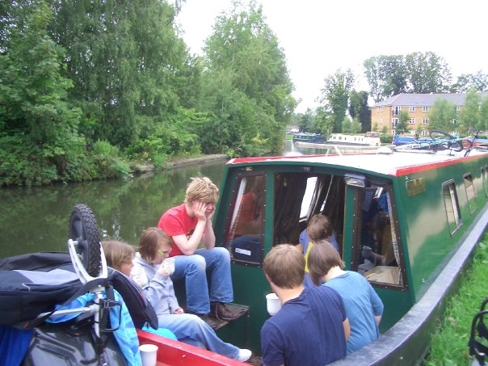
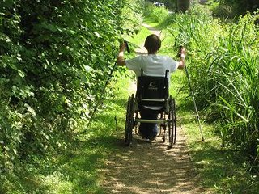
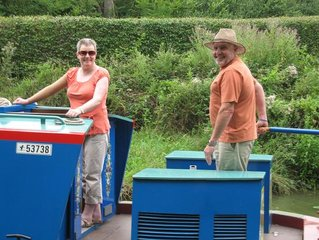
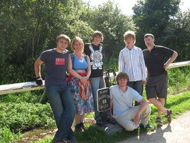
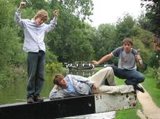
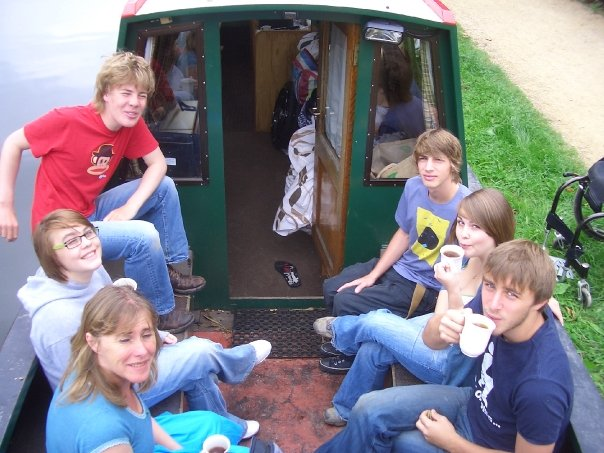
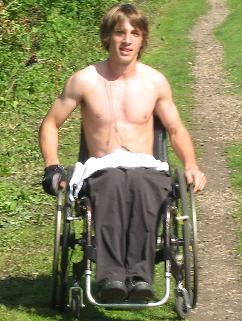
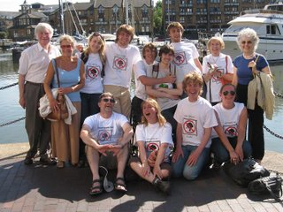

On 7 August 2009 I, accompanied by my parents: Lewis and Philippa, started the "walk", me in my wheelchair them on legs, along the Grand Union and Regent's canals from Braunston to Limehouse. The total distance is about 110 miles, and we expected to take about 12 days to complete the journey, but in fact did it in only 9. For the avoidance of doubt I made the trip under his own power, well for the most part some overgrowth navigational assistance was required. The aim of this "walk", was to raise as much money for the Royal National Orthopedic Hospital Adolescent Unit as possible, we succeeded in raising £30,267.97, which includes the 25% gift aid lovingly provided by the government for the government. A day by day blog of the events was also kept by my father, which can be found at http://wuzzbie.livejournal.com/, I also believe that further donations can still be made at www.justgiving.com/joshuawalks.
Along with raising £30,000 for charity there were some personal benefits to this expedition, for instance self satisfaction, but also it drew me out of my lazy habits, in fact when I got home i decided to do 10 miles every week. This shortly became 9 miles, but only due to the particular track with which i was working, sadly this only lasted 2 weeks before my social life took over, and now the weather is not really good enough. Of course it also brought about a large increase in upper body strength.
|  |  |
|  |  |
|  |  |
|  | |
|  | |